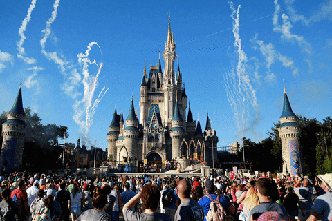

SI 339's Top Destinations
Ha Long Bay, Vietnam


Geographical Location: Asia
Ha Long Bay is a UNESCO world heritage site and a popular tourist destination in northeast Vietnam. The bay is famous for its crystal clear emerald colored waters dotted with limestone mountains that rise up from the water. Many tourists visit and take boat tours around the islands that tend to me named after their peculiar shape. For instance, tourists can take kayak expeditions around the Teapot islets, a set of islands shaped like teapots, or be rowed around Stone Dog, which appears to be shaped like a dog.
The Ha Long Bay region is popular for scuba diving, rock climbing and hiking, particularly in mountainous Cát Bà National Park. The nearest city is Hai Phong, which is approximately 75 km away. It is easier to reach Ha Long Bay by boat because the journey from Hai Phong to Ha Long Bay can take nearly 2.5 hours.
Photo Gallery


Auckland, New Zealand


Geographical Location: Australia
Auckland is the largest city in New Zealand located on the Northern Island of the country. The city’s population is just below 1.7 million people. Auckland is known as the “City of Sails” for its plethora of sailboats and yachts. The vast amount of waterfronts and harbors are conveniently located for sailors to embark on their hobbies.
Aside from sailing and waterfronts, Auckland is also surrounded by 48 volcanoes and a few rainforests. The climate of Auckland is mild-temperate. The winters are not too cold (averaging 64 degrees Fahrenheit) and summers mildly harsh (around 80 degrees Fahrenheit).
Photo Gallery


Tokyo Japan


Geographical location: Asia
Tokyo is located on the east side of Japan’s Honshu Island. It is the capital of Japan as well as the most populated city, home to 14 million people. Tokyo has the largest economy in the world of a city by Gross Domestic Product.
Tokyo is known for being one of the most modern cities in the world. Tokyo is sprawling with high skyscrapers all filled with lights and advertisements on the sides along with thousands of people inside of them. Tokyo is also known for historic shrines and temples surrounding the city which have been around for centuries. The oldest temple in Tokyo is called the Sensoji at Asakusa.
Photo Gallery


Disney World, Orlando

Geographical Location: North America
Disney World is located in the sunshine state, Florida, within the United States of America. One of the most well known ideas about Florida is that it is a famous tourist spot because year round it stays relatively warm therefore the state's major form of revenue is dependent upon tourists.
One of the most famous attractions in Florida, Disney World is located in the city of Florida, Orlando. People from all over the world come to disney to attend its theme parks where along with the thrilling rides there are live shows of different characters that disney has invented.
Photo Gallery